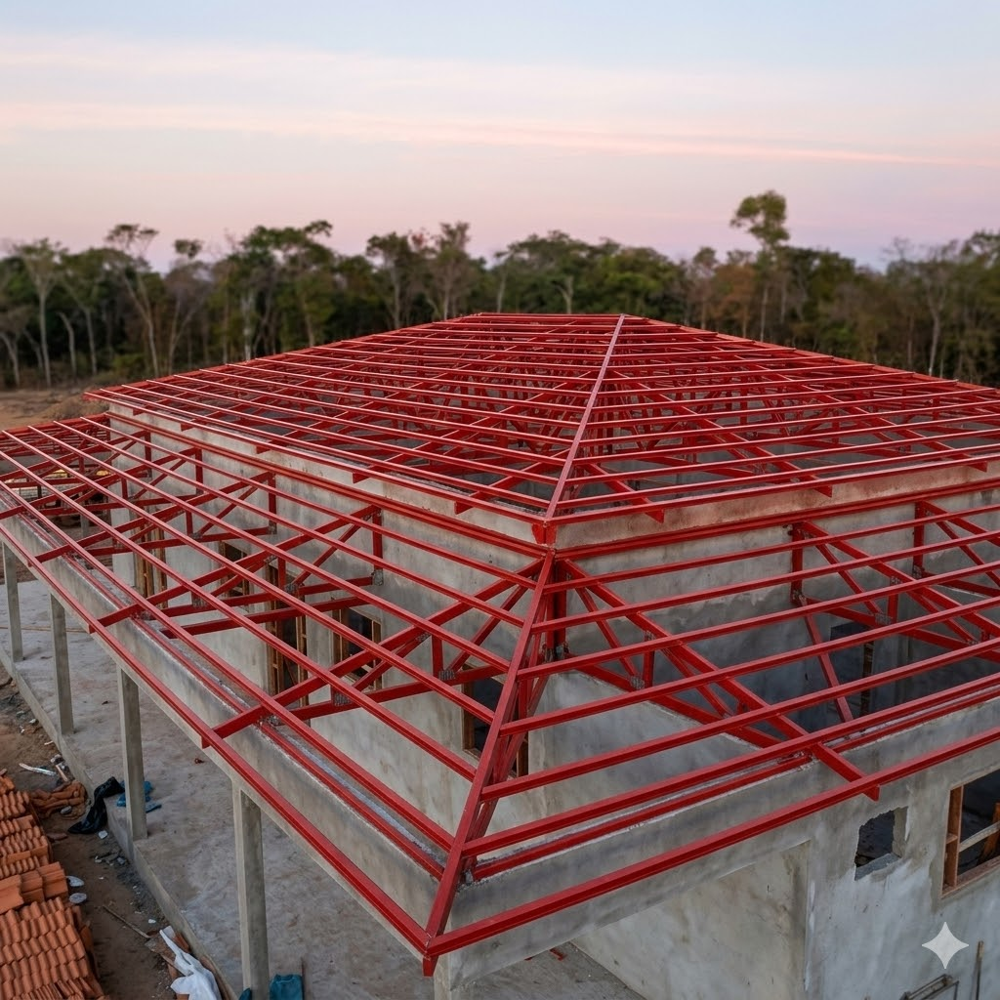

Estruturas treliçadas ideais para coberturas de grandes vãos. Fabricadas com perfis de aço dimensionados para cada projeto, garantindo resistência e leveza.
Perfis estruturais utilizados para apoio de telhas. Fabricadas em aço galvanizado ou carbono, com tratamento anticorrosivo para maior durabilidade.
Estruturas de suporte para galpões e edificações. Dimensionadas para cargas pesadas, com solda de alta qualidade e acabamento profissional.
Estruturas metálicas para aproveitamento de espaço vertical. Perfeito para escritórios, estoques e áreas administrativas em galpões.


